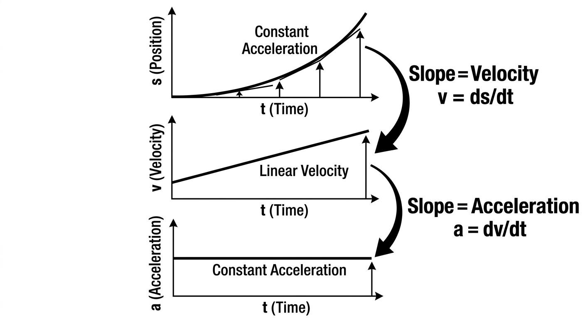

many of you would be like what even is the use of derivatives we alredy have algebra so let me tell you algebra can only tell average rate of change but derivatives find rate of change for exact points.
By knowing the rate of change, we can find the exact moment an object stops, the highest point a ball reaches, or the most efficient way to build a structure.
The dy/dx is only change in y axis with change in x axis. for example we have area of circle in y axis and radius in x axis the dy/dx will tell hoe much area will change with change of radius.
in physics derivatives play a important role in finding velocity(v) and acceleration(a) with graphs of distance(s)-time(t) and velocity(v)-time(t) graph respectively.

The slope of a Position-Time graph is the Velocity.
maxima is the highest point of a function and minima is the lowest point of a function the slope of these is always 0 as it stops briefly for a moment and then changes direction from up to down or down to up.
To change from going up to going down, an object must momentarily stop. At that exact moment, the derivative is 0. f'(x)=0{at turning points}.
Issac Newton developed it to study movements of planet.